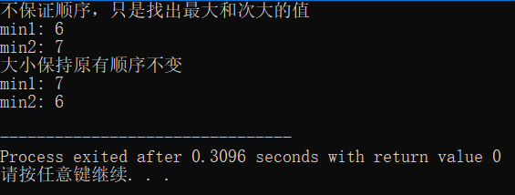

第一种方法：
采用排序，进行两趟冒泡排序，当数据基本有序（升序）且不要求按照原有数据中的顺序输出时可选择此方法
1 void select_1(int a[],int length,int *min1,int *min2){
2 int i,j;
3 bool change = true;
4 for(i = 1;i <= 2 && change;i++){
5 change = false;
6 for(j = 0;j < length - i;j++){
7 if(a[j] > a[j+1]){
8 int temp;
9 temp = a[j];
10 a[j] = a[j+1];
11 a[j+1] = temp;
12 change = true; //如果交换，说明没有排好序
13 }
14 }
15 }
16
17 *min1 = a[length - 2];
18 *min2 = a[length - 1];
19 }
第二种方法：
输出的数据按照原有数据中的顺序排列
1 void select_2(int *x1,int *x2,int x){
2 if(*x1 >= *x2){
3 if(x > *x2){
4 *x2 = x;
5 }
6 }
7 else{//x1 < x2
8 if(x >= *x2){
9 *x1 = *x2;
10 *x2 = x;
11 }
12 else if(x > *x1 && x < *x2){
13 *x1 = *x2;
14 *x2 = x;
15 }
16 }
17 }
测试数据：
懒得输入，就直接初始化了
注意：在第二次使用同一组数据时，需要重新输入或者定义另一个数组赋初值，切不可直接使用，因为冒泡排序已经改变了原有数据的顺序，也不可使用 a[10] = {2,3,1,4,7,3,5,1,6,0}; 这样的赋值语句，因为这种使用方式只有在初始化时可以这样写，在其他地方不可以，会出错，出错的原因是后面使用的不是初始化，并且a[10]表示一个值，而不是一组数，如果数组长度为10，a[10]是一个出界的数组值，也会导致出错。
1 int main(){
2 int a[10] = {2,3,1,4,7,3,5,1,6,0};
3 int b[10] = {2,3,1,4,7,3,5,1,6,0};
4 int min1,min2;
5 select_1(a,10,&min1,&min2);
6 printf("不保证顺序，只是找出最大和次大的值\n");
7 printf("min1: %d\nmin2: %d\n",min1,min2);
8
9 int i,j;
10 min1 = b[0];
11 min2 = b[1];
12 for(i = 2;i < 10;i++){
13 select_2(&min1,&min2,b[i]);
14 }
15 printf("大小保持原有顺序不变\n");
16 printf("min1: %d\nmin2: %d\n",min1,min2);
17
18 return 0;
19 }
输出结果截图：
